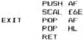
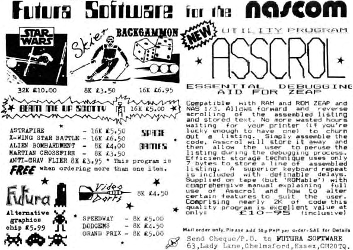

The reason for all this is to run a printer at 1200 baud
even if it is slower at printing, thereby making sure the
printer does not waste time waiting for the transmission. Most
printers have a handshaking line (not the ’how do you do’
variety though).
RAMpart Memory.
I recently suspected memory as the cause of execution
failure. Naturally, the RAM test in the
RAM B
manual was called
in (and entered in hex because the other sympton was assembly
object code and listings being different). When the execution
was finally tricked into running this test, the RAM passed.
Using a
RAM A
card cured the problem. Using the RAM B card in
another system produced no failures either. Fault find that one
if you dare’ The upshot of this is: we haven’t solved that
problem but working versions of DEBUG reside above 8FFF, tape
version won’t read in; so I jammed the cassette interfaces from
two machines together and Wrote and Read perfectly (“hi” to “in”
works). So, if swapping programs, folks, bypass the cassette to
save all that hassle. Ihe reason the PROMs could not be swapped
was because the various systems are configured for 2708, 2716
and 2732’s and they didn’t work in the wrong slots. You probably
realized I am a 3 Nascom-a-day man, mind you, the first one
always makes me quaff.
